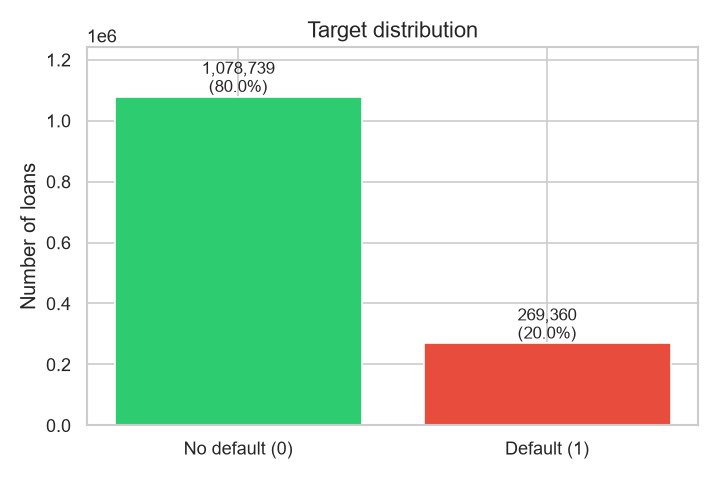
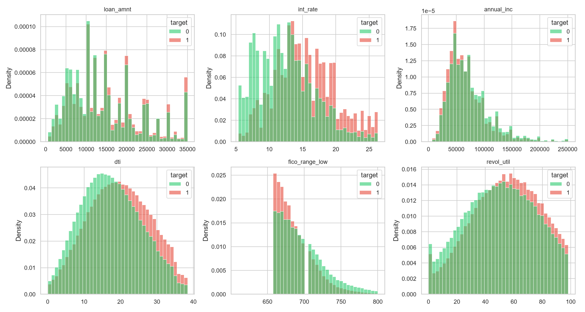
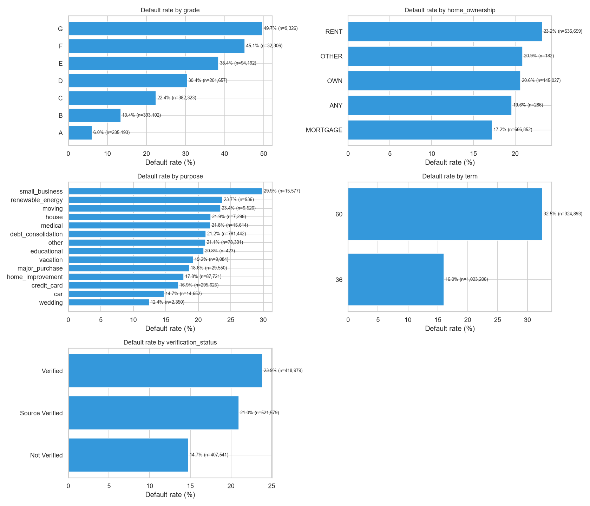
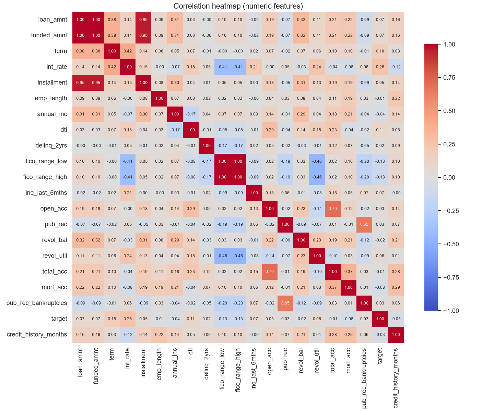

1.35 million real loan records, 43 engineered features, and a 19.98% default rate. Every decision started here.
Where the data came from — and why transparency matters.
Real-world peer-to-peer lending records spanning 2007 to 2018, covering over 2.2 million loans issued in the United States. Only loans with a final outcome (Fully Paid or Charged Off) were used — 1.35M records after filtering.
The dataset is publicly available on Kaggle and is used here for educational and portfolio purposes. All credit for the collection and cleaning of the raw data belongs to the original curator and to Lending Club.
This project does not redistribute the raw data. Only derived metrics, aggregates, and the trained model are shared. To reproduce this work, download the dataset directly from the link above.
After filtering to loans with final outcomes, 80% were repaid and 20% defaulted — a realistic class imbalance for credit risk.

The 80/20 split is a classic scenario in credit risk modeling. Not extreme enough to require heavy resampling, but imbalanced enough that accuracy alone would be misleading. This is why AUC, KS, and Gini are the right metrics — not accuracy.
How key numerical features differ between defaulters and non-defaulters. Every chart is split by the target variable.

Defaulters show a clear rightward shift — higher rates correlate strongly with higher risk.
Defaulters cluster at lower FICO scores. Non-defaulters peak around 700+.
Higher debt-to-income ratios correlate with default, though the pattern is non-linear.
Default rate by category. The Lending Club grade system is by far the strongest single signal.

Default rates rise monotonically from 6% (grade A) to nearly 50% (grade G). This monotonic relationship is what makes the model both powerful and interpretable.
Correlation between numeric features. Most are weakly correlated, meaning each contributes unique information.

From 30 raw columns to 43 engineered features — ratios, log transforms, and FICO derivatives.
loan_income_ratio,
installment_to_income,
balance_per_account,
delinq_per_account
log_annual_inc,
log_revol_bal,
log_loan_amnt
— to tame skewness.
fico_avg,
fico_range
— average and spread of the FICO range.
Binary flags for whether values were missing — "missing" itself is informative in credit data.
total_credit_lines,
has_delinq,
has_bankruptcy
— summarizing credit history.
After removing leakage, the model learned from genuine signals — not shortcuts.
Two features were removed after SHAP analysis revealed they were causing temporal leakage:
issue_year — the model learned macro-economic conditions of specific years, not borrower characteristics.addr_state — high SHAP variance (noisy signal) plus fairness concerns.Removing them cost ~1% AUC but made the model genuinely production-ready and fair.
Try the interactive demo, or dive into how the model was built.